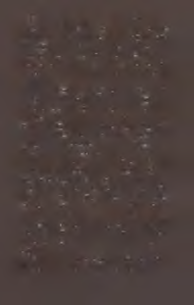

S o n u n d a b ir b u lu t g ö k tek i ayı g izled i. B e n cil şey, ne
o la ca k ! A uri fırsattan y ararlan arak k en d in i Ş ey a ltı’na
attı.
O n lu k la r’dan g e çe rk e n yüreği k ü lçe gibiy d i. F a k at U m b u k ’tay k en u n u tu lm u ş b ir fırtın a n ın m azg allard an aşağı sü rü k led iğ i b ü y ü k b ir ça lı çırp ı y ığ ın ın a rastlad ı. D işb u d ak , k araağaç ve a k d ik en . O k ad ar
ço k tah ta vardı k i h e p sin i Kabulc’a a n ca k altı seferd e
taşıy abild i. B ü yü k b ir k e şifti ve işin so n u n a doğru
g en ç k ız n ered ey se k ey ifle ıs lık ça la ca k tı.
A uri yü zü n ü , e lin i ve ayağını yık ad ı. D aha da in ce lm iş sab u n p a rça sın ın k o k u su k a rşısın d a g ü lü m sey erek y en id en en gözde ik in ci e lb ise sin i giydi. Bu h âlâ b ir faaliy et gün üyd ü .
81

C e p le rin i d o ld u rd u k tan ve to p laçu v alm ı a ld ık tan so n ra M a n d ril’e gitti. A yakların ı ıslatm ası b ile g erek m ed i, zira k im b ilir ne zam an d ır sağ an ak y ağm u r yağdığı y o k tu . A uri d o lam b açlı y olu n en u zak k u y ru ğ u n d a so n k ö şey i d ö n m ed en ö n c e d u raklad ı.
İle rid e m eh tab a dair b ir iz vard ı; o y ü zd en g en ç kız
F o x e n ’ı ça b u ca k öpüp onu m in ic ik tah ta k u tu su n a
k ald ırd ı.
M a n d ril’in so n k ısm ın ı g ö zlerin d en ziyade h a fızasıyla kat etti. D ik k a tli ad ım larla b ir o bru ğ u n d ib in e b en zey en d ik yağm u r m azg alın ın a rk asın a k a dar ilerled i. K alın p a rm a k lık la rın y an ın d a durdu.
O rad an b ak tığ ın d a Yurt’u n k ü tle sin i y ıld ızlı g ö k y ü z ü n ü n ö n ü n d e y ü k selen k o cam an b ir gölge o larak g örü y ord u . P en cerelerd e k im i k ırm ız ı k im i sarı b irk a ç ışık y an ıyo rd u ve en ü st k a tla rın b irin d e p arlak oldu ğu k ad ar ü rp e rtici b ir m av ilik göze çarp ıy o rd u .
A u ri o anda n e fe sin i tu ttu . K o n u şm alar y o k tu .
T oynak se sle ri y o k tu . U lu m a y o k tu . B a şın ı k a ld ırın ca y ıld ızlara, aya ve b irk a ç in ce b u lu t p arçasın a ra s tladı. B u lu t y ığ ın ın ın g ö k y ü zü n d e yavaşça ile rle m e sin i sey retti. Y ığın , in ce ayı sak lay an a k ad ar b ek led i.
A uri a n ca k o zam an m azgalın iç in d e k i g izli m a n dalı çev ird i ve m azgal b ir k ap ı g ibi sav ru larak açıld ı.
G e n ç kız o b ru ğ u h ızla tırm an d ı, b a k ım lı b ir ç im e n lik te n g eçti ve g en iş b ir m eşen in a ltın d ak i g ölgelere sığ ın d ı.
K alp ça rp ın tıs ı g eçen e, g ö rü lm ed iğ in d en k e sin lik le em in o la n a d ek orada h a re k e tsiz ce d ik ild i.
82
S o n ra ağ acın etrafın d an d o lan arak k en d in i bin ad an
gizledi. Ve döndü ğü gibi k oru lu ğ u n için d e kaybold u.
A uri çam k ozalakları toplarken o yeri buldu. Burası
k ü çü k , u nu tulm u ş b ir m ezarlıktı ve sarm aşıklar m ezar taşlarını kaplam ıştı. Yabani güller kadim bir dökm e dem ir çitten arta kalanlara tırm anm ıştı.
G en ç kız k o lların ı vücuduna yapıştırıp ellerini çen esin in altında tutarak m ezarlığa girdi. M ezar taşların ın arasında y ü rü rken m in ik ayakları sessizdi.
Ay tekrar açığa çık m ıştı; fakat daha alçaktaydı ve
m ahcuptu. A rtık Şeylerin Ü stü’nde olm adığı ve Yurt
ço k gerilerde kaldığı iç in onun arkadaşlığına sevinen
Auri gülüm sedi. Burada, açıklığın kenarınd a ay yerlere
saçılm ış m eşe palam u tlarını gözler önü ne seriyordu.
G en ç kız birk aç d akikasını m ükem m el şapkaya sahip
palam utları seçm eye ve onları topla çuvalına doldurm aya harcadı.
83
M ezar taşlarının arasında gezin irken k ırık b ir tanesin in yanında durdu. Taşa yazılı harfler yağm urun ve zam anın etkisiyle silin m işti. A uri ona iki parm ağıyla
dokunup yoluna devam etti. Bir h eykeldeki sarm aşıkları kaldırdı, sonra dönüp baktığında m ezarlığın karşı köşesind e y ükselen defne ağacını gördü. Ağaç m ezar
taşlarının arasına k ök salm ış, dalları yukarıda dört bir
yana yayılm ıştı. Yalnız bir şey olduğu belliydi. Tuhaf
ve yersizdi.
K ü çü k ayakları k ök lerin arasına rahatça sığan Auri
ona yaklaştı ve elini ağacın koyu ren kli gövdesine bastırdı. Y apraklarının sıcak k oku su nu bir güzel için e çekti. Yavaşça onu n etrafında dönerken kök lerin arasında karan lık bir gedik fark etti.
Kafa sallayan Auri elini toplaçuvalm a soktu ve evvelsi geçen gün bulm uş olduğu kem iği çıkardı. Eğilerek kem iği ağacın altındaki k aran lık ve k o f boşluğa sıkıştırdı. M em n u niyetle gülüm sedi.
Ayağa kalkıp dizlerini silkeledi ve gerindi. A rdından
m avi ren kli k ü çü k defne m eyvelerini toplam aya ve o n ları da toplaçuvalm a doldurm aya başladı.
O iş de b itin ce orm anı keşfe çıktı. B ir m antar bulup
yedi. Bir yaprak bu lu p kokladı. Başını kaldırıp yıldızlara baktı.
Sonrasında daha ö n ce h iç görm ediği bir dereyi g eçti ve ağaçların arasına sıkışıp kalm ış m in ik bir çiftlik eviyle karşılaşıp şaşırdı.
84
Daha doğrusu hem şaşırdı hem sevindi. Usturuplu bir
yerdi. Tümüyle taştandı ve çatısı arduvaz kaplıydı. Arka
sundurmada, kapının yakınında küçük bir masa vardı.
Orada ters çevrilmiş tahta bir kâsenin üstünü kapattığı tahta bir tabak duruyordu. Kâsenin yanında sırlı bir kil tabakla üstü kapatılmış yine bir kil kâse mevcuttu.
A ı u i
tahta kâseyi
kaldırdığı zaman altında bir
parça taze buğday ekmeği buldu.
Ekmek sağlıklı, canlı
ve samimiydi. Güzelim
şey davet doluydu. Auri
onu cebine koydu.
Genç kız diğer kâsede süt
olduğunu biliyordu ama üstünü kapatan tabağın yüzü yukarı
bakıyordu. Auri için değildi. Genç
kız onu perilere bıraktı.
Auri gölgelerde kalarak bahçenin etrafından dolandı ve ambara
yaklaştı. Orada iri, garip bir köpek vardı. Hayvan Auri’den
bir buçuk katı olup, omuzları onun neredeyse göğsüne kadar geliyordu. Genç kız ambara yaklaşırken köpek gölgelerin arasından çıktı.
Siyah renkli yaratığın kaim bir ensesi vardı ve yüzü baştan
aşağı yara izleriyle kaplıydı. Kulaklarından biri, unutulmuş
bir kavgada çiğnenerek yırtılmıştı. Devasa kafasını alçakta
tutan köpek, kuşkuyla zikzak çizerek ve gözünü kızdan ayırmayarak yaklaştı.
Sırıtan Auri ona elini uzattı. Köpek o eli kokladı, sonra
kızın parmaklarını yaladı. Ağzım kocaman açarak esnedi ve
uyumak için yere çöktü.
Altı taş üstü boyanmış tahtadan olan ambar çok büyüktü. Kapı kanatları kapalıydı ve büyük bir demir asma kilitle kilitlenmişti. Fakat çok yukarılardaki samanlığın penceresi
geceyi selamlamasına ardına kadar açıktı. Auri bir sincabın
süratiyle sarmaşık kaplı taşlara tırmandı. Ambarın kalasları
parmaklarına ve ayaklarına bir tuhaf geldiği için yolun ikinci
yarısında yavaşladı.
Ambar misk ve uyku doluydu. Tahta duvarlardan sızan birkaç mehtap huzmesi hariç karanlıktı da. Genç kız Foxen’m ufacık kutusunu açtı ve yaratığın mavi-yeşil ışığı
dışarı taşarak açık alanı doldurdu.
Yaşlı bir at, bölmesinin önünden geçerken burnunu
Auri’nin boynuna sürttü. Genç kız ona gülümsedi ve hem
kuyruğunu hem de yelesini kaşağılamaya vakit ayırdı. Hamile bir dişi keçi meleyerek selam verdi. Auri hayvanın yemliğine biraz yem attı. İçeride bir de kedi vardı ve Auri’yle birbirlerini görmezden geldiler.
Auri orada biraz vakit harcayarak her şeyi gözden geçirdi. Bileğitaşı. El değirmeni. Ufak ama yerine iyi oturtulmuş
yayık. Tabaklanması için çerçeveye gerilmiş bir ayı postu.
Epeyce sıradışı ve hoş bir yerdi. Her şey ilgi ve sevgi görmüş86
tü. Auri’nin karşılaştıklarından hiçbiri lüzumsuz, kayıp veya
hatalı değildi.
Yani neredeyse hiçbiri. En sağlam gemi bile biraz su sızdırır. Tek bir turp durduğu sepetten yere düşmüş ve orada unutulup kalmıştı. Auri onu toplaçuvalma koydu.
Ambarda ayrıca büyük bir taş kulübe vardı. İçine bir çimento tuğladan daha kaim ve iki kat daha uzun buz tabakaları yığılmıştı. Auri kulübede, kesilmiş et ve tatlı tereyağı kreması buldu. Bir kâsenin içine bir topak içyağı koyulmuştu, bir tepsinin içinde ise bir petek bal duruyordu.
İçyağı küplere binmişti. Sinirinden yerinde duramıyordu.
Kendi yoluna gitmekten başka hiçbir şey istemiyordu. Auri
onu çuvalının derinliklerine soktu.
Ah. Ama o petek. Çok hoştu. Azıcık bile çalıntı değildi.
Çiftçi arıları çok seviyordu ve işini uygun biçimde görüyordu. Petek sessiz çanlarla ve uyuşuk yaz ikindisiyle doluydu.
Auri ceplerinin içini yokladı. Parmakları kristalin ve kü
çük taş heykelciğin üstünden geçti. Taş da buraya uygun de
ğildi. Sonra elini toplaçuvalma daldırdı ve biriktirdiği meşe
palamutlarını yokladı.
Uzunca bir süre yanında getirdiği hiçbir şey mekâna doğru düzgün uymayacakmış gibi gözüktü. Fakat sonra parmakları onu buldu ve genç kızın kafasında bir şimşek çaktı. Beyaz dantel örgüyü dikkatle dışarı çıkardı. Onu katlayıp yayığın
yakınına bıraktı. Örgü pek çok uzun ve uyuşuk güz gününün
özenle hazırlanmış bir ürünüydü. Böyle bir yerde kendine bir
amaç bulurdu.
Auri daha önceden çobanpüskülü dutlarını tutan temiz,
beyaz bezi aldı ve ona biraz tereyağı sürdü. Ardından yapış
yapış bal peteğinden karış büyüklüğünde bir parça kopardı
ve elinden geldiği kadar düzgünce sarmaladı.
Kendisininki bıçaklarla dolu olduğu için biraz tereyağı
da almayı çok isterdi. Kulübenin rafına dikdörtgen şeklinde
87
kesilmiş on bir kalıp dizilmişti. Kalıplar yonca, kuş cıvıltısı
ve ne gariptir ki kasvetli kil izleriyle doluydu. Buna rağmen
hepsi de birbirinden hoştu. Auıi toplaçuvalım eşeleyip ceplerine ikişer kez baktı. Fakat sonunda elleri boş kaldı.
Kulübeyi sıkıca kapattı. Sonra merdiveni tırmanarak tavan arasının açık penceresine çıktı. Foxen’ı kaldırıp çuvalım sıkıca sırtına astı ve ambarın yanından yavaşça inmeye koyuldu.
Yere ayak bastığında uçuşan saçlarını yüzünün önünden
çekti ve uyuyan dev köpeği kafasından öptü. Sekerek ambarın köşesini döndü ve bir düzine adınım ardından ensesindeki karıncalanmadan dolayı gözetlendiğini hissetti.
Ayağı havada donakalan genç kız adeta taş kesildi.
Rüzgârın dokunduğu saçları kendiliğinden hareket ederek
bir duman bulutu gibi hafif bir biçimde başının etrafında
uçuştu.
Gözlerinden başka hiçbir yerini kıpırdatmayan Auri aradığını buldu. İkinci katta, açık bir pencerenin karanlığında kendisininkinden bile daha küçük olan solgun bir surat gördü. Gözleri kocaman açılmış, minik elini ağzına götürmüş
küçük bir kız onu seyrediyordu.
Acaba küçük kız ne görmüştü? Foxen’ın kalasların arasından sızan yeşil ışığım mı? Auri’nin devedikeni tomurcuklarına benzer saçlarının örttüğü ufak tefek suretini mi?
Auri’nin ani tebessümü saç perdesiyle gizlendi. O anda
yanlamasına takla attı attı. Uzun zamandan beri ilkti. İncecik
saç telleri bir kuyrukluyıldızın kuyruğu gibi onu takip etti.
Bakışlarını etrafta gezdirdiği zaman gövdesinde karanlık bir
deliğin bulunduğu bir ağaç fark etti. Auri fırıl fırıl dönerek
ve hoplayıp zıplayarak ona doğru dans etti. Ağacın yanma
vardığında da eğilip deliğin içine baktı.
Sırtı çiftlik evine dönük olan genç kız Foxen’m kutusunu
açtı ve arkasındaki sessiz geceden ufacık bir nidanın yükseldiğini duydu. Gülmemek için bir elini ağzına bastırdı. Delik 88
kusursuzdu. Tam da küçük kızın kolunu uzatabileceği ve içini yoklayabileceği kadar derindi. Tabii meraklıysa. Kolunu neredeyse omzuna kadar deliğe daldırabilecek cesareti varsa.
Auri cebinden kristali çıkardı. O cesur ve bir o kadar
da şanslı kaşifi öptü. Burası mükemmel
yerdi. O da mükemmel şey. Doğru, Auri
artık Şeyaltı’nda değildi. Yine de bu yaptığı o kadar doğruydu ki reddedilemezdi.
Kristali bir yaprağa sarıp deliğin dibine
bıraktı.
Sonra dans ederek, sıçrayarak, coşkuyla
gülüp oynayarak ağaçların arasına koştu.
Oradan tekrar mezarlığa gitti ve büyük,
yassı bir lahidin üstüne çıktı. Gülümseyen
Auri dimdik oturdu ve azıcık bal katılmış
yumuşak buğday ekmeğiyle kendine şöyle güzel bir yemek hazırladı. Sonrasında
kabuklarından yeni çıkarılmış çamfıstık-
larım mideye indirdi. Her biri ufacık ama
mükemmel bir tatlı gibiydi.
Yemek boyunca kalbi coşkuyla attı.
Sırıtışı ayın ince hilalinden daha parlaktı.
Yemeğin ardından hınzır ve münasebetsiz
biriymişçesine parmaklarını da yaladı.
O ö O